System Design Principles
System Design Basics 2
Replication 2
Solutions/Patterns for Replication Lag Issues aka Consistency 3
Solutions/Patterns for Multi-master Write conflicts 4
General approaches/pointers for leaderless replication: 4
Solutions/Patterns for Leaderless write conflicts 5
Consistency 6
Tangent on Linearizability vs Serializability 6
Strict serializability 7
Consistency Patterns/Techniques 8
Consistency Spectrum Models 8
Linearizability Deep Dive 9
Achieving Consistency using Anti-entropy Techniques 10
Summary of Consistency Spectrum 11
Partitioning 12
Rebalancing (partition vs dataset size) 13
Request Routing 13
Secondary Partition 14
Transaction 15
Isolation / Concurrency 16
Concurrency Control (CC) Categories 17
Isolation/Concurrency Levels & Approaches 17
Concurrent Writes and Lost Updates 20
Distributed Transactions 21
Cons of distributed transactions 21
Solutions for “A” in ACID 21
Distributed Transactions in Practice 22
Distributed Transactions in Application level: SAGAS 22
Consensus 24
Consensus Algorithms 24
Consensus Implementations 24
System Design Concepts 26
SQL vs NoSQL 26
Communication Models 29
Pros & Cons: Event Sourcing 29
Pros & Cons: CQRS 30
Pros & Cons: Microservices 31
Pros & Cons: Monoliths 32
Good API for every User Type 33
REST vs GraphQL vs gRPC 34
How to approach a System Design Problem? 42
System Design Trade-offs 42
System Design Cheat Sheet from ByteByteGo 44
Architectural Patterns and Techniques - A Summary 45
References 49
System Design Basics
Replication
Pros | Cons |
- Failover is good for availability
- 2 datacenters (availability), DR and data resiliency
- Scalability and Performance
- Async replication is good for latency and throughput
- Geolocated reads improves latency
- Strong consistency using:
| - Scalability and Performance
- Write heavy apps will bog down slaves
- Read heavy apps require more slaves resulting in more replication lag
- Latency and availability are hit if synchronous replication is used
- Replication lag affects mainly "consistency". C in ACID;
- Replication lag = leader - follower
- Leads to Eventual consistency or loose consistency
- Need for serialization, ordering, timestamp
- async replication - so potential data loss
- inconsistent data upon failure
- Stale data
- Discarded writes
- Split brain
|
- Synchronous replication or single-leader replication has increased durability guarantee. Updates are not lost even if leader crashes
- Asynchronous replication increases performance for writes
| - Synchronous replication or single-leader replication results in slower writes and is blocking
- Asynchronous replication reduces durability
|
Single Master - Simple to implement
- No need for distributed concurrency protocols as leader serializes operations.
- Easier to support transactions
- Scalable for read-heavy workloads
| Single Master - Master is SPOF
- Not scalable for write-heavy workloads
- imposes an obvious trade-off between performance, durability, and consistency
- Adding more read replicas may affect performance
- Sync replication can block if a replica is down
- Fail-over when leader crashes is not instant
|
Multi-master - Better network tolerance
- Better perceived performance
- High availability
| Multi-master - Deal with write-conflict
- Failover could lead to split brain
|
Leaderless - No leader election needed
- No failover needed. Write to many and read from many
| Leaderless - Quorum is complex
- Write conflict resolution is needed
- Stale data management
|
Applications - Single master is popular in financial institutions
- Multi-master
- Suited for offline apps
- Suited for collaborative editing
- Can be single master
- Multi-master for faster operation
- Weak consistency: Suitable for VOIP, Video, Gaming
- Eventual consistency: Suitable for search engine, Amazon S3
- Strong consistency: Suitable for file system, RDBMS
| - No global transaction possible
- Auto incrementing keys will be problematic
- Triggers
- Constraints (unique key) in MM is complex
|
Solutions/Patterns for Replication Lag Issues aka Consistency
- Read-after-write consistency (RAW)
- Read your writes to ensure your write is OK
- Not for other users i.e., A writes and B cannot read
- Some techniques
- Always read from leader
- Read from leader for some initial minutes i.e., 1 minute
- Client uses timestamp and so replica honors it
- Cross device RAW is harder
- Ex: Google docs?
- Solution?
- Monotonic Reads (MR)
- Read going backwards
- Strong consistency < MR < Eventual Consistency
- Solution: User to read from same replica
- Consistent prefix reads (CPR)
- Maintain write order
- Solution:
- Use causal order
- Use happens-before and concurrency
Solutions/Patterns for Multi-master Write conflicts
- Use synchronous write - same as single master
- Avoid write conflict
- Use home datacenter for writes
- Send user to same datacenter and use same master (single) within datacenter
- Breaks with user moves or leader/datacenter fails
- Converge
- Use last write wins (causes data loss)
- Use UUID (time stamp, random text, uuid on hash)
- Largest UUID wins
- Use custom merge logic. Make clients resolve conflict (like DDB)
- Record conflict in another store and let the user decide. Ex: confluence
- On-write / on-read custom conflict handlers
- Automatic conflict resolution
- CRDT (conflict-free replicated datatypes) use sensible rules to auto-resolve conflicts
- Git like 3-way merge
- Operational transformation
General approaches/pointers for leaderless replication:
- Quorum
- W + R > N
- Write (W) to many nodes
- Read (R) from many nodes
- Use version number
- W & R must overlap
- N must be odd
- Cons of Quorum
- If W and R do not overlap, it results in Sloppy Quorum
- Concurrent write and read conflicts
- Failed write in some W and not rolled back in some W
- Quorum condition may break if the node in quorum goes down.
- Read and write happening at same time can result in stale read
- Sloppy Quorum
- Not really a quorum
- Writes go to W. But some nodes in W are not part of N home nodes
- Solution: Use hinted handoff after some nodes recover
- Good for write availability
- Assurance of durability
- Staleness
- Need to monitor staleness
- DB metrics in single or multi-master can be used to monitor
- Hard in leaderless environment
- Solutions for staleness
- Read repair. Ex: Client repairs bad data
- Anti-entropy process. Ex: background process copies missing data
Solutions/Patterns for Leaderless write conflicts
- Use last write wins (LWW)
- Force natural order using UUID, timestamp, random. Pick the largest UUID.
- Results in data loss (durability is affected)
- Use happens before (Sequential)
- Use version for every key
- Upon write, merge all lower versions, but keep all higher version. Milk, eggs example.
- Merge
- Use client side merge
- Use deletion marker (tomestone)
- Use CRDT
- Version vector
- Version across replicas
- Version number per replica as well as per key
- When multiple replicas are involved, a version is assigned per key per replica. Each replica maintains the version number for a given key locally that is incremented when the replica processes a write to the key. Additionally, each replica also tracks the version numbers for a given key from other replicas. All the versions for a key across all the replicas is referred to as a version vector and is sent to the client upon a read of the key.
How is replication achieved?
- Pessimistic replication tries to guarantee from the beginning that all the replicas are identical to each other—as if there was only one copy of the data all along.
- Optimistic replication, or lazy replication, allows the different replicas to diverge. This guarantees that they will converge again if the system does not receive any updates, or enters a quiesced state, for a period of time.
- SQl syntax like now() or auto increment and triggers can cause issues
- storage engine logs and so tied to vendor
- Size of WAL can be big
- Copy all insert/delete/update statements
Consistency
- Be consistent in accordance with a set of rules or standards.
- Consistency contexts:
- Distributed Consistency: state or property of replicas or servers have the same view of the data at a given point of time i.e., replicas have the same data
- Storage & retrieval Consistency: Each read returns the value of the most recent write.
Tangent on Linearizability vs Serializability
Linearizability | Serializability |
- State of replicas as if there is only 1 replica
- Ex: 2 phase commit to achieve this
- More of a consistency or consensus concept
- Applied to single-object operations (read/write to single register)
- Provides real-time guarantees
| - Transaction isolation (Race between parallel transactions)
- Ex: 2 phased lock to achieve this
- More of an isolation/atomicity concept
- Serializable snapshot isolation
- Applied to multi-object operations (read/write to multiple rows)
- No-real time guarantees. Cannot guarantee serial order is compatible with real-time order.
|
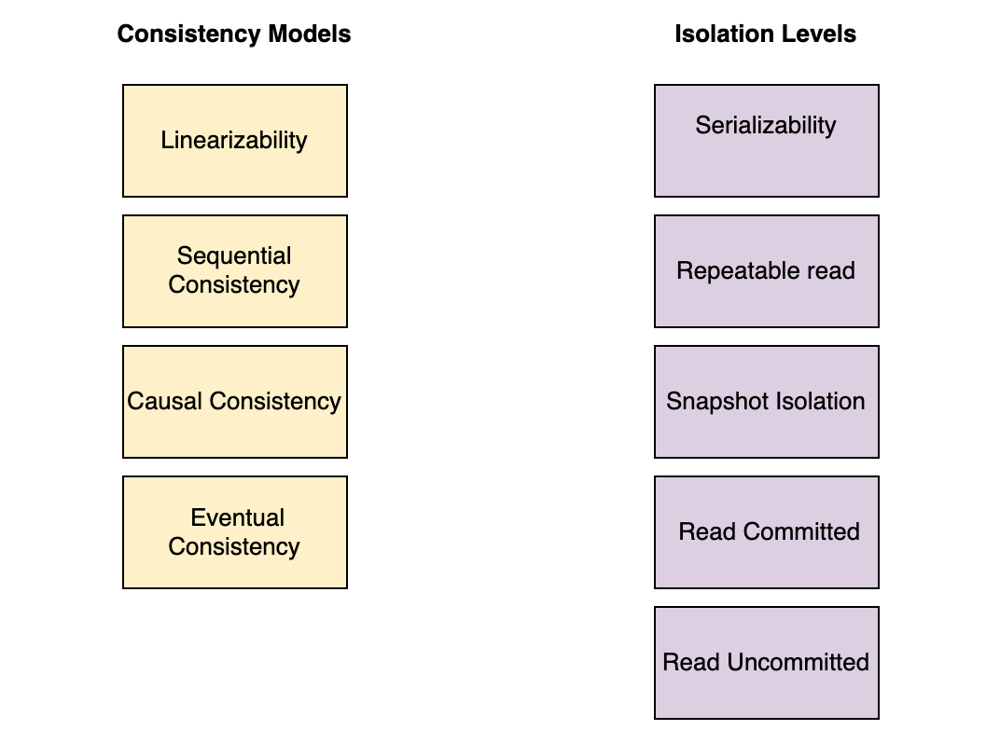
Both linearizability (consistency) and serializability (isolation) express what executions are possible and not possible.
- Linearizability allows a subset of the executions causal consistency allows, while serializability allows a subset of the executions that snapshot isolation allows.
- The fact that a system provides linearizability automatically implies that the same system also provides causal consistency.
Strict serializability
- Strict serializability is a model that is a combination of linearizability and serializability.
- Guarantees serial execution of multiple transactions + real-time ordering
- Easier in centralized systems. Costly in distributed systems.
- Models can be organized in a hierarchical tree according to their strictness and the guarantees they provide.
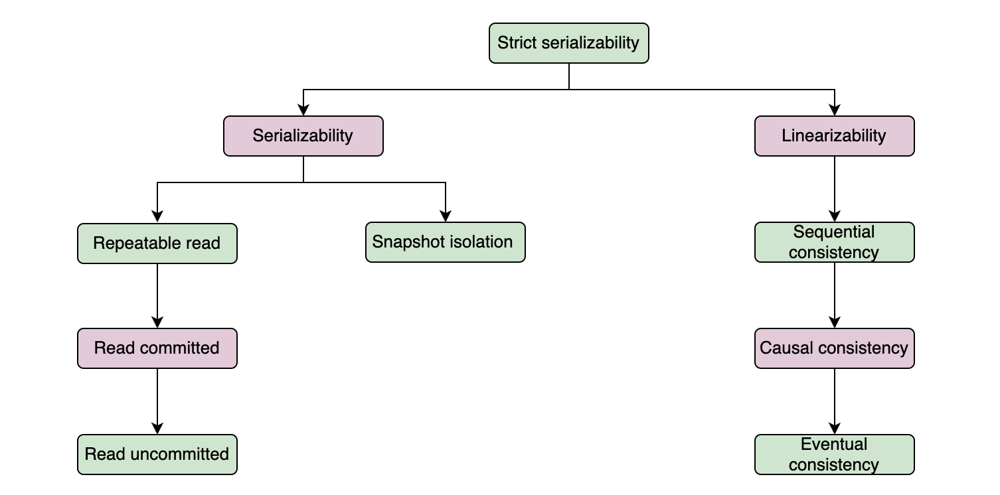
Consistency Patterns/Techniques
Techniques in distributed systems to ensure data consistency:
- Data replication
- Consensus protocol
- Conflict resolution
Techniques in data storage to ensure read consistency:
- Write-ahead logging
- Locking
- Data versioning
Consistency Spectrum Models
(Sorted by strongest to weakest)
- Linearizability
- Strongest
- Write visible to all exactly at once. Operations appear to be instantaneous to the external client
- No partial or side effects
- How is it achieved? Consensus based
- Cons: Difficult to achieve in practice as it requires all nodes to be in constant communication.
- Sequential
- Based on ordering
- weaker consistency model, where operations are allowed to take effect before their invocation or after their completion. Example is here. Posts from “a” friend should be in order, but not all friends
- Causal
- Causally-related (dependent) operations are seen in the same order by all
- Preserves the order of the causally-related operations i.e., if operation A must happen before operation B, then all processes in the system will see A before they see B
- The consistent prefix reads guarantee says that if a sequence of writes happen in a certain order then the writes are served to the reader in the same order.
- Solution:
- Send all related writes to the same partition.
- How is it achieved? Logical clocks, version vector
- Session model
- Read own writes or read-after-write
- Solution:
- User writing should read from the leader. Others read from replica
- Send all reads to leader for X seconds after write
- Use timestamp or sequence number to ensure replica is in sync
- Monotonic reads: Once read, all subsequent reads from that client will return same value or more recent value. Client will "not" see stale data.
- Solution: direct all queries from a user to same replica
- Monotonic writes: Once a write operation has been acknowledged by a replica node, all subsequent reads from that replica node will return the updated value. Replica will "not" return stale data
- Write follows read
- Eventual
- Updates are propagated asynchronously
- Need conflict resolution like last write wins or vector clocks
- CAP trade: A for C or vice-versa
- Pros: Allows for more flexibility and tolerance of delays or failures, but
- Cons: can result in temporary inconsistencies in the data.
- Tunable
- R+W>N
- Write heavy: W=1, R=N
- Strong eventual consistency (?)
- CRDT prevents conflict and allow any order
Linearizability Deep Dive
- Linearizability = One replica effect
- Atomic consistency
- Strong consistency
- Immediate consistency
- Recency guarantee
- Strong single-object single-operation model
- Writes visible to all readers exactly once at some point in time
- When/why is linearizability needed?
- Leader election
- Uniqueness constraints
- Cross channel timing
- Single leader (maybe)
- Consensus (yes)
- Multi-leader (no)
- Leaderless (probably not)
- Linearizability is C in CAP
- Affects performance.
Linearizability and Ordering
- Linearizability implies ordering
- Achieved using timestamp and clocks
- Why is ordering important?
- Preserves causality
- Detects concurrent writes
- Concurrent operations are incomparable. So causality is partial order
- Causality is hard. So use sequence number of timestamp
- Sequence number ordering
- Pregenerate blocks
- odd/even combo
- Attach timestamps (LWW)
- Lamport timestamp
- Total order broadcast like in Zookeeper
Achieving Consistency using Anti-entropy Techniques
Aim is to bring the nodes back up to date.
- Read repair
- Coordinator fixes diff/missed updates
- Blocking or asynchronous
- Digest reads
- Same as above + coordinator does digest checks instead of full read check
- Hinted handoff
- If write fails, diff is stored as hint and replayed to target node by write coordinator
- Merkle trees
- Hash of local data -> Tree of hashes
- Compare trees quickly
- Bitmap version vector
- Recency based
- Maintain logs
- Compare logs
- Gossip
- Uses gossip protocol
- Cooperative propagation to disseminate information
Summary of Consistency Spectrum 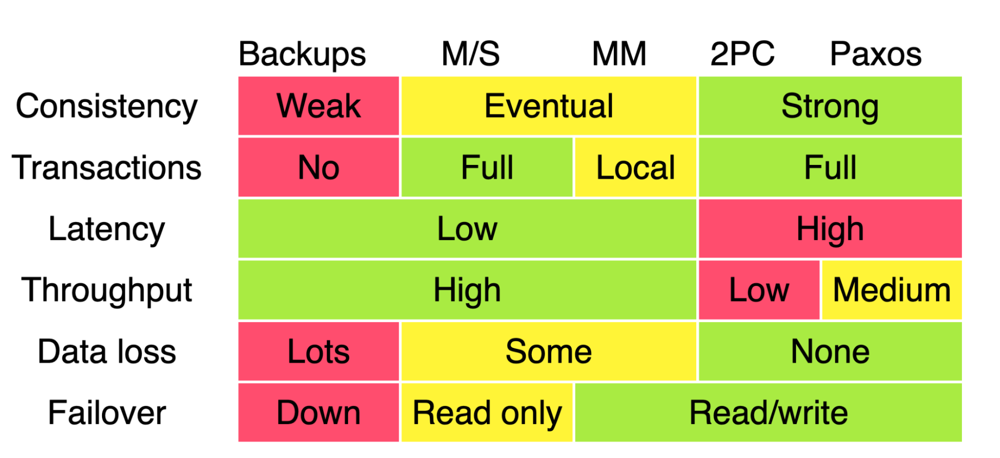
Main deck: https://snarfed.org/transactions_across_datacenters_io.html (Ryan Barrett)
Partitioning
Pros | Cons |
- Availability, Performance, and Scalability
- Better availability when combined with replication
- Performance
- Read less, write less, replicate less.
- More cache hits resulting in better performance
- Reduced index size = faster query time
- More throughput due to faster writes
- Horizontal scalability is cheaper
| - Complex joins
- Potential loss of transactional semantics
- Complex application logic in terms of queries and scatter/gather
- Referential integrity is broken (constraints, foreign key)
- Rebalancing is costly
- Hot spotting
|
Types of Partitioning
Horizontal aka Range/row based | Key or Hash based | Other |
Pro | Con | - Simple
- Sorted keys for range query using partition key
- Makes adjusting ranges (re-partitioning) easier. One range can be increased or decreased
| - Hotspotting. Ex: timestamp.
- Unbalanced servers.
- Can't do range query other than partition keys
- Poor performance if range is in multiple nodes
|
|
Pro | Con | - Better distribution
- Partition mapping is done at run-time. No need to store metadata or additional requests
| - No range query.
- Scatter gather.
- Re-partition may results in significant data movement
|
| - Directory based lookup
- Round robin
- Composite
|
Partitioning Criteria
- Tenant
- Geo
- Entity id
- Graph
- Time
- Industry practices
- B2B: customer ID based partition (salesforce)
- B2C: Multidimension, multisource (Amazon)
- B2C2C: Geo based (Instacart)
Techniques/Patterns to reduce hotspots
- Use a hash - not great for celebrity
- Add random number to celebrity record alone
- Results in scatter-gather
- Extra bookkeeping is needed as random number is needed for celebrity alone
Rebalancing (partition vs dataset size)
- In general, do not do Hash Mod N as most keys will have to be moved
- Fixed number of partitions
- size of each partition is proportional to the size of the dataset
- Create more logical partitions than nodes i.e., several parts in one node
- Pro: mismatched hardware. More partitions on powerful machine
- Con: Hard to find the right partition size.
- Small partition: overhead
- Large partition: expensive to rebalance
- Dynamic Partition
- number of partitions is proportional to the size of dataset
- Popular in range partitioned Db like HBase
- Partition split automatically when size limit is reached
- Partition is merged automatically if data is deleted.
- Can be used in hash based as well
- Mongo 2.4 supports
- Partition proportional to nodes
- Closer to consistent hashing
- Number of partitions proportional to the number of nodes i.e., fixed number of partitions per node
- Size of each partition grows proportional to dataset size while number of nodes is consistent
- New node randomly chooses fixed number of partitions to split and take ownership of one half
Request Routing
- Purpose: Find the node that has the data
- Contact any node and if not found, forward the request
- Use routing tier (reverse proxy)
- Make clients partition aware
- In practice, use coordination service like Zookeeper to keep cluster metadata. Zookeeper maintains mapping
- Cassandra/Riak uses gossip protocol to share info
- Request routing degrades to a worst case scenario of scatter/gather or fan out.
Secondary Partition
- Primary key is used to uniquely identify a record.
- Secondary key is used for search based on any field that may or may not be unique across all records. It is harder to map multiple keys to a partition.
- Secondary index doesn’t uniquely identify a record.
Type of secondary partition
Document based | Term based |
- Each partition has its own local index
- Pro: only need to update the partition that contains the ID
- Con: scatter-gather
| - Global index covering all parts
- Term-partitioned
- Pro: fast read
- Con: slow write
|
Transaction
Pros
- Works when hardware or application fails
- Handles network issues
- Handles clients writing to DB at the same time
- Handles race conditions between clients
BASE vs ACID
- BASE: basically available, soft state, and eventual consistent.
- Basically available: database should always ensure some level of availability, even in the face of network partitions, hardware failures, or other issues. This means that the database system is designed to respond to client requests even if it means sacrificing some level of consistency in the data
- Soft state Soft state implies that the state of the system can change over time due to various factors, such as node failures, network delays, or concurrent updates
- Eventually consistent
- ACID: Atomicity, Consistency, Isolation, Durability
A - atomicity | C - consistency | I - isolation or concurrency | D - durability |
- Should have been called abortability
- Each transaction is all or nothing
- Steps are indivisible - sequence of operations is treated as a single logical unit of work
- Either commit or abort
Techniques: - Implemented using a log for crash recovery
- DBs provide complex atomic operations
- Compare and set operation
| - Being in a good state
- Any transaction will bring the DB from one valid state to another and not intermediate
- Application specific guarantee.
- AID of ACID are properties of the DB
- C of ACID is the user-controlled property of application i.e., application must define the valid rules and constraints that lead to a consistent final state.
| - Concurrency of transactions
- 2 transactions concurrently has the same effect as executed serially - aka serialization
- Defines when the changes to Db become visible and what changes may become visible
- Isolation levels, such as Read Uncommitted, Read Committed, Repeatable Read, and Serializable, define the degree of isolation provided by the database
| - No loss. Once transaction is committed, it will remain permanent
- Promise that data will not be forgotten
|
Isolation / Concurrency
Isolation Levels
- Serializability: It essentially states that two transactions, when executed concurrently, should give the same result as though executed sequentially.
- Repeatable read: It ensures that the data once read by a transaction will not change throughout its course.
- Snapshot isolation: It guarantees that all reads made in a transaction see a consistent snapshot of the database from the point it started and till the transaction commits successfully if no other transaction has updated the same data since that snapshot.
- Read committed: It does not allow transactions to read data that has not yet been committed by another transaction.
- Read uncommitted: It is the lowest isolation level and allows the transaction to read uncommitted data by other transactions.
Isolation anomalies:
- Read anomalies
- Read skew - occurs when there are integrity constraints between two data items that seem to be violated because a transaction can only see partial results of another transaction
- Dirty read: read uncommitted transactions from another write
- Non-repeatable read (NRR): same query returns different results
- Phantom read: same as NRR, but for range query.
- Write anomalies
- Dirty write: uses uncommitted value to modify. Violates integrity constraints. 2 txns update the same object before either txn is committed.
- Lost update: simultaneous update of same key/value. 2 txns update the same object and 1 commits before the other.
- Write skew:
- individual transactions are good. But when combined goes bad. 2 txns read same object and update different objects based on read value.
- Usually involves multiple objects
- Solutions
- Lock rows: Lock the common object (like sum of 2 tables, averages of rows etc)
- Use serializable isolation (strongest)
- Materializing conflict: locking all rows in the conflicting context
- Use DB constraints to avoid simple conflicts like registering with same email id
Reference:
- Anomalies
- Isolation levels
Solutions for Lost Update problem (due to write conflicts)
- Lost update = later write clobbers earlier write
- Atomic write (exclusive lock)
- App level explicit lock. Ex: SQL “for update” locks all rows
- Automatically detect and abort
- Atomic compare and set
- Replicated environment: locks or compare/set will not work. Usually last write wins (LWW) is used
Concurrency Control (CC) Categories
Optimistic CC | Multiversion CC (MVCC) | Pessimistic CC |
- Non-blocking
- Lossy
- Critical section based
- Reader-writer locks
- Upgradeable locks
| - Lockless using timestamp ordering
- Lock based like 2 phased locking
- Snapshot isolation
| - Record level locks (may cause deadlocks)
- Lock-free using timestamp ordering like last write wins (LWW)
|
Isolation/Concurrency Levels & Approaches
WEAK ISOLATION | STRONG ISOLATION |
Non-serializable | Serializability (strongest) aka transaction isolation |
Read committed - No dirty read (read non-committed/aborted data)
- No dirty write (overwrite uncommitted write)
- Non-repeatable read allowed
- Phantom read allowed
- Dirty writes solved by row level locks
- Dirty reads solved by using the same lock
- Use read-write lock
| Actual serial execution - Use single thread like Redis, VoltDB
- Good for in-memory DB like Redis
- Eliminates cost of locking and coordination
- Good for OLTP with few reads and writes
- Not good for write heavy apps
- Not good for interactive applications - frequent read/write back and forth
- Not good for long running analytical queries (snapshot isolation is better here)
- Tradeoff between single-thread and DB partition to achieve throughput
|
Snapshot Isolation (SI) - Based on snapshot before start of transaction
- transaction is aborted if the value in the snapshot changes. Hence, no lost update
- Write skew is possible as local is good, but global is bad
- Allows repeatable read
How is it achieved? - Write locks (to avoid dirty writes)
- Big diff vs 2PL: Due to snapshot readers don't block writers and writers don't block readers. Snapshot is like a read cache of committed values.
- Needs MVCC due to snapshot
- Pro: Good for read heavy apps
| 2 Phased Lock (2PL) - Stronger lock
- Tradeoff between isolation and performance. Response times and transaction latency is worse
- More prone to deadlocks
- Deadlocks are detected by DB and txn is aborted
- More workload, more deadlocks
- Predicate lock - lock on a condition (bunch of objects/rows) and not row.
- Apps with too many concurrent txns can bog down performance
- 2PL + Index range locking
- Approximation of predicate lock.
- Lock a wide range or rows/objects via the index for the table.
- Lock indirectly using the index.
- Better perf than predicate locks
How is it achieved? - Read: shared mode lock
- Write: exclusive lock
- Reader does not block other readers, but block writers
- Writer blocks all other readers and writers
- [1] Phase 1: acquire lock
- [2] Phase 2: release lock at end of transaction
- Cons: 2 PL is pessimistic. If anything goes wrong, then wait.
|
| Serializable Snapshot Isolation (SSI) - In between weak and strong isolation
- Optimistic concurrency control -
- concurrent txns dont block each other in hopes that there is no interference with each other.
- Violation (read snapshot is not valid anymore) is detected at commit time by txn manager and txn is aborted.
- Only transactions that executed serializably are committed
- Pros
- Good for read heavy apps (low contention)
- Unlike 2PL txns dont block over locks
- Tradeoff between Bookkeeping and aborts
- Not good for long running trasactions
- Write heavy apps would result in too many aborted transactions.
How is it achieved? - SSI = SI + algorithm to detect serializable write conflict
- Writers don't block readers and vice versa
- [1] Txns get a snapshot of DB (read)
- [2] Txn proceeds to update based on snapshot.
- [3] At commit time, txn manager validates the snapshot and if violated, aborts txn
|
Isolation levels and prevented anomalies
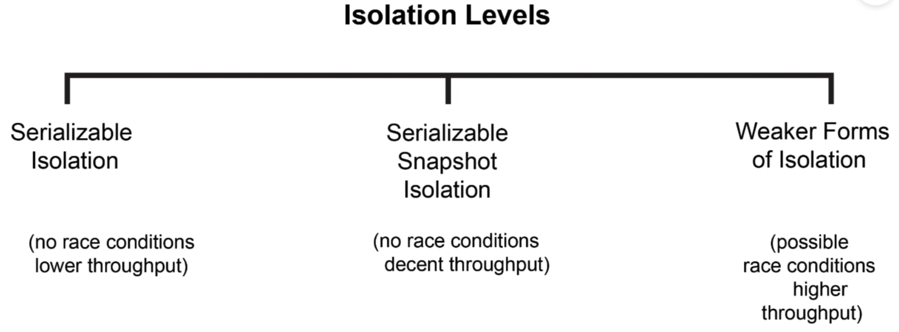
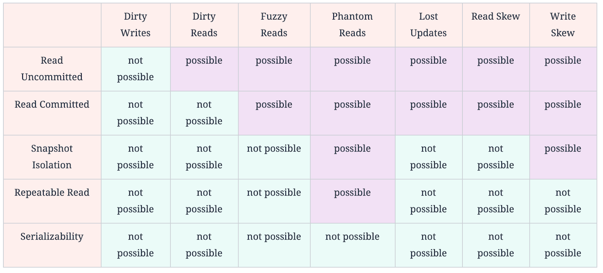
Concurrent Writes and Lost Updates
Single Master | Distributed Database |
Read-modify-update cycle creates conflicts/lost updates Solutions - Atomic writes (like SQL Update statement)
- Compare and Set (CAS): Optimistic update, fails on concurrent changes.
- Explicit lock on rows
- Automatic detection of lost updates
| - CAS/explicit-locks ineffective for distributed write-write conflicts.
- Conflicts recorded, resolved by app code or data structures
Solutions - Usual strategy is Last write wins (LWW). Can result in lost-updates.
- Commutative ops (e.g., add/subtract counters) enable conflict resolution without data loss, similar to Riak's distributed datatypes.
|
Distributed Transactions
Cons of distributed transactions
- Locks
- Read commit needs locks
- 2 phase commit needs to lock all the time
- Coordinator failure
- Coordinator is itself a DB
- Single point of failure if not replicated
- Stateless apps become stateful due to coordinator
- 2 phase commit / 3 phase commit needs additional network roundtrip
Solutions for “A” in ACID
A = All or nothing. Atomicity or abortability
Two Atomic Commit Algorithms |
2 PC | 3 PC |
Coordinator plays big role - Prepare phase
- Commit or abort phase
| 3 PC = 2 PC + timeout - Timeouts for cohorts on both sides so they can proceed with commit or abort
|
Similar to a Western marriage: "I do" from both is needed |
|
Sequence: - Node proposes transaction
- Node gets TransactionID from coordinator
- Coordinator sends “prepare” to nodes. Nodes can reply with yes/no
- Coordinator sends commit/abort to nodes
| Sequence: - Propose: propose and collect values. Coordinator failure is allowed
- Prepare: share vote results
- Commit/Abort
|
Pros - Timeout in 3PC is not reliable. So 2PC is popular
| Pros - Even if coordinator fails, nodes can proceed with deterministic decision
|
Cons - Coordinator failure is blocking as nodes will not know what to do
- Hence, 2 PC is blocking due to coordinator failure
- May need server reboot and manual abort of transactions
- N/W round trip cost
| Cons - In N/W partition some will abort and some will commit resulting in split brain
- More message overhead than 2PC
- N/W round trip cost
|
Distributed Transactions in Practice
- Solution for A&C in ACID
- XA or X/open Architecture
- XA/extended architecture for 2PC across heterogeneous tech
- XA is ‘C’ API.
- XA is not a protocol
- Uses 2PC
- Reduces time held on locks
- Agree of execution order and transaction boundary before getting locks
- Uses Paxos
- 2PC over consensus group per partition
- Truetime API for ordering
- Paxos for translation log replication
- Ramp
- SAGA (application level)
Distributed Transactions in Application level: SAGAS
- SAGAS is application level distributed transaction
- Only supports A,C, and D. No concurrency
- Sequence of local transactions coordinated by async messages
- SAGA = T1 + T2 + T3 …Tn //upon failure abort all
- Cons
- Lack of isolation due to local transactions
- Lost updates
- Dirty reads
- Semantic lock - application level lock
- Commutative updates design
- Like REST idempotency
- Update in any order
- Read your writes
- Version file to turn non-commutative to commutative
Types of SAGA |
Choreography | Orchestration |
- Distributed responsibility
- Event based
| - Central coordination logic
- Orchestrator tells what to do
|
Consensus
Consensus Algorithms
- Agreement: No 2 nodes decide differently
- Validity: Node decided value proposed by someone else
- Termination: all correct processes eventually reach the decision
- Need to broadcast
- Need ordered broadcast
- Atomic aka total order broadcast gives reliable delivery and total order
- Broadcast leads to chicken-egg problem i.e., who is the first leader
- So use epoch number: ballot number in Paxos, term number in RAFT,
- Epoch gives total order and monotonic increase
Pros | Cons |
- For multipartition scenarios
- For Leader election
- For Atomic commit
- For Ordering events
- In general for
- Agreement
- Integrity
- Validity
- Fault tolerance
- Total order broadcast can implement linearizable atomic operations
| - Need strict majority
- Hard to add/remove nodes due to voting
- Timeouts could lead to frequent leader election
- Network problems could lead to leader resignation in RAFT
- Voting is synchronous while DB replication is usually asynchronous
|
Consensus Implementations
- ZAB (Zookeeper atomic broadcast)
- Elect leader
- Leader proposes new epoch
- Followers respond to proposal
- Leader receives client message and broadcasts
- Leader waits for quorum to acknowledge
- Final commit
- Paxos
- Proposers, acceptors, learners
- Quorum based
- Sequence
- Voting phase to elect leader
- Replication phase to broadcast value
- Variations: Multi-paxos, fast paxos
- RAFT
- Newer since 2013
- Sequence
- Leader election
- Periodic heartbeat from leader
- Leader log replication / broadcast
- Byzantine Consensus - PBFT
- Practical byzantine fault tolerance
System Design Concepts
SQL vs NoSQL
Capability | RDBMS | NoSQL |
CAP | Always ACID (strong consistency). | Generally BASE (eventual consistency) |
Transaction | Native, strong support, ACID. | No. Gives up ACID for scalability and performance |
Schema | - Schema-on-write
- RDBMS data model focuses on the structure of data and its relationships with other data. (source: AWS docs)
| - Schema-on-read is similar to dynamic type checking in programming languages.
- Schema-on-read is good if the collection does not all have the same structure for some reason i.e., data is heterogeneous.
- Data modeling focuses on access patterns, or how the application is going to consume the data, so it stores the data in a way that supports straightforward query operations. (source: AWS docs)
|
| - Each record conforms to a fixed schema, meaning the columns must be decided and chosen before data entry
- Each row must have data for each column.
- Schema is rigid. The schema can be altered later, but it involves modifying the whole database and going offline.
| - Schemas are dynamic/elastic. Upgrade is simpler
- Columns can be added on the fly, and each ‘row’ (or equivalent) doesn’t have to contain data for each ‘column.’
|
Logical Schema | - Relational - data is related.
- Each row represents an entity.
- Each column is a data point.
| Different model: - Key/value
- Document
- Object store (blob)
- Graph store
- Column family
|
Physical schema instance | Row major | Columnar or column major (different columns need different treatment) |
Indexing | Hash index, B-tree index | Hash, B-tree, hybrid |
Locking | Row level, deadlocks are possible, deadlock detection is expensive. | - Cell or field level locking.
- Leasing (New concept) - avoids deadlock.
|
Interface/ Query | SQL is powerful | - APIs, SQL.
- Queries are focused on a collection of documents.
- UnQL (Unstructured Query Language). Different databases have different syntax for using UnQL.
- Support for specialized query operations. Non-restrictive schema
|
Data joins | Well supported. | No joins. Handle at upper levels |
Data relation (when to use?) | Ideal for many-to-one and many-to-many using normalization and foreign key relations. | - Ideal for one-to-many relations
- Leads to locality which is better performant
- Goes against normalization.
- Many-to-x is harder due to lack of joins
- Document DBs target data that comes in self-contained documents and relationships between one document and another are rare
|
Many-2- many | Harder; Use mapping table | Graph database. Graph DBs target data where anything is potentially related to everything. |
Sharding & Replication | Limited support, layered, not native, and expensive | Native. |
Large data (> 1 TB) | Good for < 1 TB. Degradation in capabilities for > 1 TB | - Native.
- Greater scalability, large datasets, high write throughput
|
Throughput (read and write) | Good for low volumes. Degrade for high volumes and expensive | Excellent. |
Applications |
| Use KV store in applications only when the application knows the K. Else this is a waste as the application needs to scan all the keys K. For ex. DynamoDB |
Availability |
| - Optimistic Replication: Don't wait for ack from all. Reduces latency and allows continued availability. Introduces temporary data inconsistency.
- Sloppy Quorum and Last Write Wins: Sloppy - A subset of replicas ack. Relaxed quorum leading to inconsistency. Inconsistency resolved by LWW.
- Hinted Handoff: Temporary store write as hint. Deliver hint later to appropriate node. Prevents data loss.
|
Security | Native. | Non-existent. Left to higher layers to implement |
Data integrity | Native. | No |
Other |
| - Originally a twitter hashtag #NoSQL
- Free and open source
|
Communication Models
Sync | Async |
Client-server model - Tight coupling as communication between systems depends on their knowledge of each other.
- Need to know the destination (Meh)
- Contract between sender/receiver is rigid
- Each node has an accurate clock. All nodes run in lock-step
- Mostly bidirectional communication
- Emphasis on request and response and not on the data itself
| Flowing Streams of Data model (Kafka) - Loose coupling or decouple systems.
- Any one can consume message from sender
- Consumers can process data at any rate. Unprocessed data will be in the store. Broker acts as a buffer
- Flexible contract or no contract between sender and receiver
- Results in eventually consistent systems
- Mostly one directional communication i.e., pub/sub etc
|
Fault Tolerance - Failure can cascade.
- No delivery guarantee if one system goes down. Little room for error.
| Fault Tolerance - In general, more failure resilient.
- Stronger delivery guarantees. If a consumer goes down, it will simply pick up from where it left off when it comes back online again
|
Scalability - Scalability is coupled (transitive?)
- Performance: Weakest link in the chain in baseline
- Receiving system can be overwhelmed if there is no buffer
| Scalability - Independent scalability (sort of)
- Log based append only storage has higher throughput.
|
Ease - Easier to debug end to end
- Communication is not replayable. This makes it difficult to reconstruct the state of a system.
- Multiple species of systems make it difficult to maintain
| Ease - Easier to maintain because these systems produce and consume data without knowledge of other systems.
- Complex setup and so harder to debug
|
Pros & Cons: Event Sourcing
Pros | Cons |
- Persistence of aggregates
- Reliably publish domain events
- Object-relational impedance mismatch
- Aggregate history
- Audit logging, time machine of systems
| - Complexity of message based systems
- Evolving events is tricky
- Deleting events is tricky
- Querying the store is challenging. Need CQRS
|
Pros & Cons: CQRS
Pros | Cons |
- Improved separation of concerns
- Fights data gravity (as data and data structure grows, it becomes harder to organize and arrange the data). The volume and weight prevents movement and change
- Separates write and read model so they can evolve independently
- Can have different data models and database for command and query side
- 2 models: write optimized and read optimized
- Helps build event based system where communication between services are through events
| - Complex to set up
- API composition to retrieve data from multiple sources is harder
- Consistency issues due to replication lag
|
- Follows closely with Event sourcing
- Supports multiple and diverse query models (one for each type)
- Materialized views (MV) that prejoin data for fast access (stream processing, ksqldb?). MV benefits:
- Inbound bulkhead - protects downstream services from disruptions in upstream services
- Live cache prevents issues with read-through cache (cache miss, stale data, complexity)
- Capacity allocation per query
- MV = appropriate DB + proper index + pre-caculated joins + store data in format needed by specific customer
|
|
Pros & Cons: Microservices
Context | Pros | Cons |
Design | - Loose coupling paradigm.
- Flexible (?)
- DB is hidden.
- Single purpose (part of business domain)
- Well defined communication boundary
| - Not ideal for startups.
- Microservices modeled around team boundaries have pros and cons. For example, who owns what?
- Deciding when to adopt the microservice architecture is difficult.
|
Development | - Easier to learn the code base.
- Parallel development.
- Polyglot favorable.
- Enables teams to be autonomous.
| - Harder for new developers to understand end to end architecture without proper documentation.
- More unknowns outside of one's own service.
|
Functionality | Allows easy experimenting and adoption of new technologies. | - Distributed transactions are harder. Use 2 phase commit or Sagas.
- Distributed data management is hard. May require a Scatter/Gather data approach.
- Finding the right set of services is challenging.
|
Testing/ Release | Faster releases | Distributed systems are complex, which makes development, testing, and deployment difficult. |
Deployment | - Services are independently deployable.
- It enables the continuous delivery and deployment of large, complex applications.
| Deploying features that span multiple services requires careful coordination. |
Maintenance | - Easier maintenance.
- Services are small and easily maintained.
- Granular observation
| - Harder to debug if distributed tracing is not implemented
- Network is a prime source of issues
- Async communication between microservices causes more issues. See Sync vs Async Comm
|
Scalability, Fault Tolerance, Performance | - Better Failure/Fault isolation.
- Robust and resilient.
- Services are independently scalable.
| Potential performance issues. |
Anti-patterns |
| 1. Monolith in Microservices 2. Chatty Microservices 3. Distributed Monolith 4. Over-Microservices 5. Violating Single Responsibility 6. Spaghetti Architecture 7. Distributed Data Inconsistency 8. Tight Coupling 9. Lack of Observability 10. Ignoring Human Costs
|
Pros & Cons: Monoliths
Pros | Cons |
- Tight coupling (having everything in one place is good too)
- Simple to deploy (may be)
- Simpler code reuse
- No network issues
- Better control over transactions
| - Tight coupling
- Intermingled business logic (if code grows over years)
- Delivery contention. Small change requires extensive testing
- Ownership conflicts
|
Good API for every User Type
User | Characteristics |
API Consumer | - Self-service & Discovery
- For skilled developers
- To reduce support cost
- Better customer experience
- Documented request/response
- Developer portal with good categorization
- Design and mock environment
- Avoid duplicate APIs
- Good syntax that helps predict behavior
- Name,
- URI
- Response code
- Good version
- Scope of API
- Single purpose
- Should not allow users to misuse
|
Dev Team | - Capability
- Flexible and easy to extend
- Meet stakeholder needs
- Development and Testing
- Easy to test without spending whole lot of time on documentation
- Purpose driven
- Easy to read and understand
- Good test coverage (unit and integration)
- API maturity model
- Follow patterns to implement logic
- Resource based routing
- Content based routing (header)
- Pagination
- CRUD support
- CQRS
- Aggregator (scatter/gather)
- Orchestration
- Webhook for notification
|
SRE | - NFRs
- Geo-routing
- Throttling
- Rate limiting
- Availability, Error handling, Fault tolerance. Circuit breaker, bulk-head
- Proper logging so monitoring and debugging. Correlated logging in microservice world
|
Security | - Security
- Public vs Private
- Firewall
- Access control
- Authorization
- Encryption of PII data
|
REST vs GraphQL vs gRPC
REST | GraphQL | gRPC |
- Client-server communication
- Stateless
- Cache friendly
- Uniform interface (resources, manipulation via HTTP verbs, HATEOS
- Layered systems
- Code-on-demand:
- "REST allows client functionality to be extended by downloading and executing code in the form of applets or scripts.
- Perhaps one of the lesser-known constraints in REST, code-on-demand talks about accessing a resource that when parsed on the client-side (for example, a browser) actually contains code that can be executed by the client itself. This means that a server resource is also able to delegate some of the processing logic to the client. In fact, many APIs today make use of this constraint. An example is the Google Maps API, which allows browsers to display a map and interact with it.
- OAS
- API Blueprint (markdown based language for defining APIs)
- WADL
- APIARY
- RAML - Restful API modeling language. Yaml based alternative to Swagger
| - GraphQL is more similar to RPC-based protocols, such as SOAP and gRPC, than to REST.
- In fact, it could be said that GraphQL is, at the very least, RPC-inspired given the number of similarities.
- Principles
- Hierarchical
- View-centric
- Strongly typed
- Client-driven
- Introspective
- Version free
- Not much caching or authorization and pagination support.
- Operations
- Query
- Mutation
- Subscription (implementation of web events (for example, Webhooks) allows clients that subscribe to a given event to then asynchronously receive updates.)
| - Runs on HTTP/2 and so below benefits
- Binary protocol
- Header compression
- Multiplexed requests over single TCP connection (HTTP/2)
- Built in flow-control
- Strongly typed
- Single compiler (protoc) to generate client and servers in multiple languages
- Perhaps because of these features and its high-scaling capabilities, gRPC is particularly popular in microservice architectures as the means to enable service-to-service communications in high-throughput environments.
- Interaction styles
- Unary (traditional request/response)
- Server streaming
- Client streaming
- Bidirectional streaming
- Characteristics
- HTTP/2 is transport protocol
- Protocol buffers
- Browser-based applications can't implement gRPC stubs; instead, the gRPC-Web JavaScript client library has to be adopted, which lets browser clients access a gRPC server via an Envoy proxy acting as a HTTP 1.1 <> HTTP/2 bridge.
- gRPC makes use of protocol buffers, which are Google's mature and open-source mechanism for serializing and de-serializing structured data.
- Protobuf is used to define service interface and structure of messages
- Protobuf is used to serialize and deserialize payload
- Protobuf is used to generate source code
- Protobuf is used to manage message versioning
|
Dev Experience |
|
|
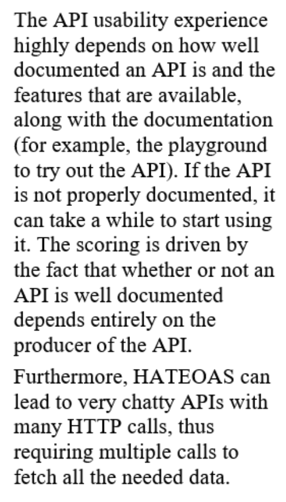 | 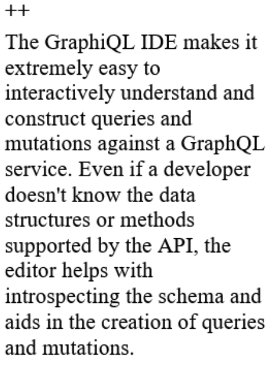 | 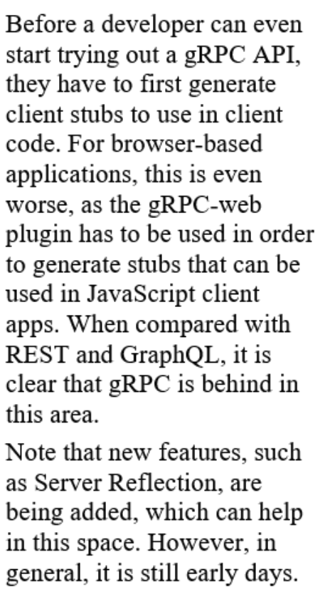 |
++ A vast amount of tooling is available to aid in the design of the REST API, including the ability to mock APIs, create playgrounds, auto-generate server code, and also test against API designs. However, because there are so many standards to define REST APIs, there also are inconsistencies market-wise concerning what standard to use and why. | - When it comes to API design and testing, the tooling for GraphQL is still maturing. So, in order for a developer to design an API code, it has to be written. The same is true for creating an API mock, which isn't ideal in the early stages of design when it is desirable to try out different options and quickly get feedback from multiple users of the API. | ~ This is similar to GraphQL in the sense that the tooling is still maturing; however, in the case of gRPC the protoc command line makes it easier to generate servers that comply with the interface design by default. |
API Gateway |
|
|
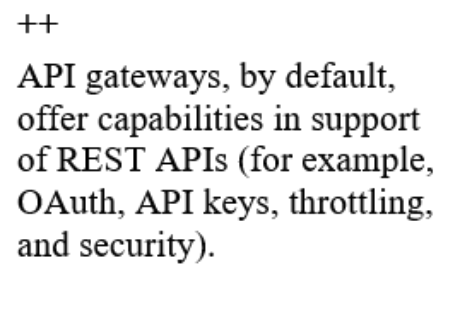 | 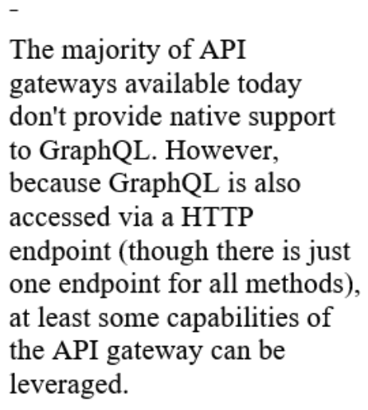 | 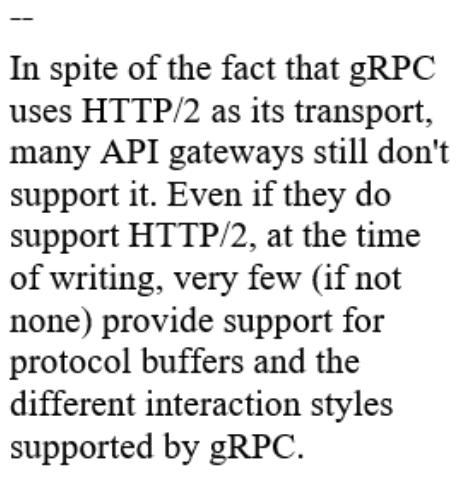 |
-- As REST is entirely resource-based, it is not natural to define endpoints that combine data structures coming from multiple resources. | ++ GraphQL is perfectly suited for API composition, almost as if it was created with this objective in mind. This is because in GraphQL, each field within a query can in fact be fetched (in parallel) from multiple sources. Most importantly, this is part of the standard behavior of GraphQL and not a customization or adaptation. | ~ Being an RPC-based protocol, gRPC doesn't really impose any restrictions about how a method is to be implemented. |
API Composition |
|
|
-- As REST is entirely resource-based, it is not natural to define endpoints that combine data structures coming from multiple resources. | ++ GraphQL is perfectly suited for API composition, almost as if it was created with this objective in mind. This is because in GraphQL, each field within a query can in fact be fetched (in parallel) from multiple sources. Most importantly, this is part of the standard behavior of GraphQL and not a customization or adaptation. | ~ Being an RPC-based protocol, gRPC doesn't really impose any restrictions about how a method is to be implemented. |
AuthN/AuthZ |
|
|
++ Standards such as OAuth and OpenID are well aligned with REST and can be easily implemented with existing REST tooling. In fact, the vast majority of API gateways support these standards out of the box. | - Because GraphQL is accessed through a HTTP endpoint, standards such as OAuth and OpenID can be adopted because all operations can be accessed by a single URI, but custom authorization modules are typically required within the GraphQL service implementation itself. | -- OAuth and OpenID can both be implemented in gRPC; however, custom code is required, thus adding to the complexity. |
Caching |
|
|
++ REST being so aligned with HTTP 1.1 means that it benefits from all the caching support that comes with network appliances and even web browsers. The majority of API gateways also support response caching. | ~ Caching is down to the implementation of the code for both the server and the client. However, tooling is evolving rapidly and there are many implementations today that support server- and client-side caching out of the box. | - Just like in GraphQL, caching in gRPC is down to the implementation of the code for both the server and the client. However, when compared with GraphQL, there isn't the same number of implementations that support caching. |
Versioning |
|
|
- There is a lot of industry-wide debate about how versions should be handled in REST. Some favor URI-based versioning, others header-based versioning, and others no versions at all. So, ultimately, it is down to the developer what strategy to adopt. | ++ Best practices are clear and publicly available in the official GraphQL site. Versioning should be avoided and tooling is available to support forward and backward compatibility without having to run in parallel multiple versions of the service. | ~ Protocol buffers by design support backward compatibility. Furthermore, as servers and clients are generated from the .proto file, different versions of the file could be maintained, though this could lead to confusion if many versions exist. |
Async Communication |
|
|
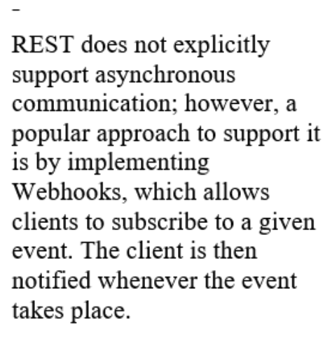 | 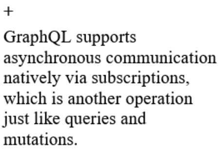 | 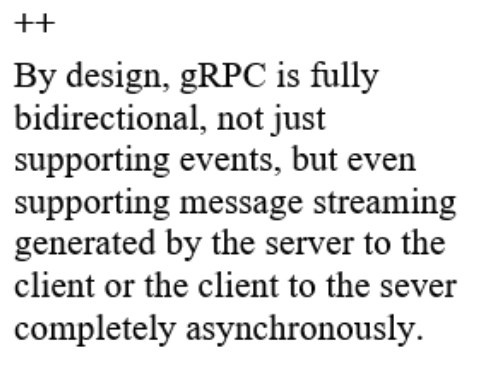 |
|
|
|
How to approach a System Design Problem?
- Be curious and question the ask like an end user (or admin)
- What is important for the user?
- How would the user use the system? What is the workflow?
- What is unknown to you (solutions architect)? Ask it out.
- Question thoroughly to reduce scope.
- Do not design a system that surprises the client. They expect a certain solution (esp in an interview)
- Is this a breadth or depth oriented problem? Design uber vs distributed cache
- Is this a read or write heavy application?
- Are there real-time needs? Many applications are real-time now.
- Derive the high level design.
- As you are doing this, discuss trade-offs.
- Do not assume decisions (even if you think it is trivial) and move forward. For example, in a rate limiter problem, it is common to assume server side rate limit. But ask the interviewer if that is what he/she wants.
- Discuss other trade-offs like SQL vs NoSQL etc.
- Discuss with the interviewer if it is good so far
- Walk-through the design as if the client is using the system. This will help you catch gaps.
- Like resetting the counter in a API rate limiter problem at the end of the time window
- How can the client study the effectiveness of the system. Do they need logging and analytics?
- Ask the interviewer if anything that you found in this walk-through is important for them.
- High level design - Ask interviewer what to focus on
- Explore Db schema (depending on the problem)
- API design
- Address scalability. Always call out trade-offs when you scale.
System Design Trade-offs
- Time vs Space (as in algorithms)
- Latency vs throughput
- Response time = latency + processing time
- Throughput vs bandwidth
- Example: more latency, increased queue in network, reduced packets are processed, leading to lower throughput
- Performance vs Scalability
- Performance: Slow for even a single user
- Scalability: Slow under load for users
- Consistency vs Availability: CAP
- PACELC
- Nuanced version of CAP
- In the case of network partitioning (P) in a distributed computer system, one has to choose between availability (A) and consistency (C) (as per the CAP theorem), but else (E), even when the system is running normally in the absence of partitions, one has to choose between latency (L) and consistency (C).
- If the system tries to provide for strong consistency, it has to do replication with synchronous communication and blocking to ensure all the read replicas receive the most recent write, waiting on the acknowledgement from all the replica nodes, adding to high latency. On the other hand, if the system does asynchronous replication without waiting for acknowledgment from all nodes, it will end up providing eventual consistency when the replica node has acknowledged the data mutation change for serving the requests.
- 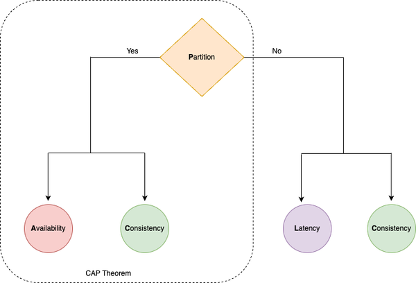
- The first part of the theorem defines the two categories we have already seen: CP and AP. The second part defines two new categories: EL and EC. These sub-categories are combined to form the following four categories:
- For example: A system from the AP/EL category prioritizes availability during a network partition and latency during a normal operation.
Note: AWS Architectural Trade-offs
System Design Cheat Sheet from ByteByteGo
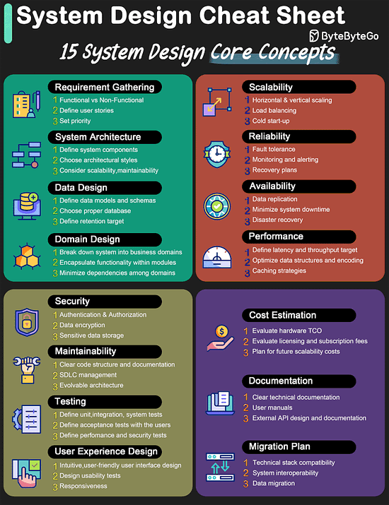
Architectural Patterns and Techniques - A Summary
Context | Application Patterns | Data Patterns |
Scalability
System’s ability to cope with increased load.
| Network - Load balancer
- API Gateway
- Use CDN
- Use Cache
- Autoscaling or elasticity
- HTTP/2
- Binary framing
- Parallel requests,
- Header compression
- Server push
Architecture - Asynchronous as in Queue based or EDA
- Kafka: Partitioning is core of its scalability
- Async framework (like Node.js) for top tier applications
- Serverless is easier to scale
- Microservices
- SRP
- Stateless is easier to scale
- Idempotent so you can cache
- Web sessions clustering to avoid sticky session failures
- Centralized session store
Dev & Testing - Scalability testing for load spikes
- Test to find out hotspots and refactor code
- DR recovery planning
- Chaos testing
Shared resource - Noisy neighbor, Thundering herd, Starvation, Tragedy of commons
| - More throughput due to faster writes
- Cheaper to scale horizontally
- Query cache
- Object cache
- Session cache
- Use eventually consistent databases
|
Reliability
“continuing to work correctly, even when things go wrong.”
Ability of a system or component to perform its intended function consistently and without failure over a given period of time. It is a measure of the dependability or trustworthiness of the system.
| - Redundancy (in components)
- Long running Soak tests to detect unwanted behavior over time like memory leaks
- Auto scale / load balance
- Failover mechanisms
- Graceful degradation and backpressure
- Avoid cascading failures:
- Exponential backoff,
- Timeouts
- Idempotent operations
- Service degradation and fallback
- Request rejection
- Circuit breaker
- Shallow
- Deep
- Route53 HealthCheck
- Endpoint monitoring
- Calculated healthcheck
- Cloudwatch alarms
- Static
- Dynamic content cache
- Cache to avoid DDoS
- Page cache
- In-memory cache
- Patterns
- Cache aside
- Cache-as-SOR
- In-line
- Write through
- Upon cache miss, too many requests could go to origin.
- Send requests to the waiting room. DAX for DynamoDb
- Bulkhead
- Stateless applications
| - 2PC and Paxos have minimal data loss
- Data integrity checks (periodic)
- Checkpointing based fault tolerance: data is reliably stored and backed up.
|
Availability | Network Load Balance Monitoring - Health-checks - At different levels: application, AZ, Region
Redundancy, Fail-over patterns: - Passive can be cold or warm(read)
Architectural Trade-offs Operations and Maintenance Principles - Change management
- Capacity management
- Automated detection and troubleshooting
Fault tolerance or Fault Isolation - Circuit breaker,
- Bulk-heads (resilience4j)
- Fail fast
Microservices
| - Eventual consistency systems prioritize Availability over Consistency
- Partitioning
- Partitioning + replication = better availability
- Enables failover
- Enables data resiliency
- Single-leader replication
- all systems are able to both read and write
- Most systems are either loosely consistent or have increased write latency due to synchronization to remain consistent.
- Multi-leader is better
- Use idempotence (UUID) and order tolerance (LWW) while recovering from master failure
- Consensus algos help elect a new leader
- Hinted handoff for node that is recovering. Prevents data loss.
|
Performance | FE, BE approaches. Cache, minify, zip, CDN, bundle, Parallel calls, async calls, avoid locks | - Eventual consistency systems have better performance.
- Strong consistent systems (linearizable) affects performance due to high latency (Paxos, 2PC)
- Replication
- Reduces latency due to geolocated reads
- Improves throughput (esp in multi-leader set up)
- Optimistic replication (dont wait for ack)
- Sloppy quorum
- May result in scatter gather
- Reduced index size = faster query time
- read less, write less, replicate less
- More cache hits
|
Availability 9s
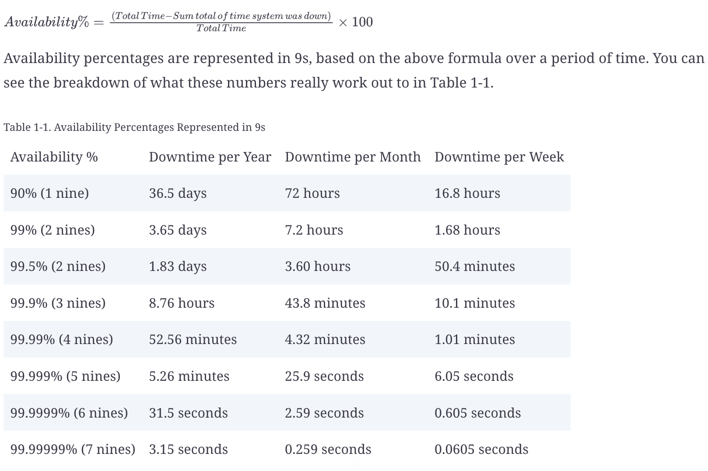
References